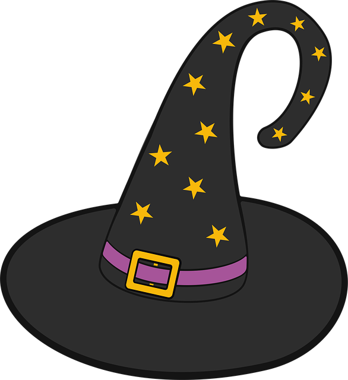
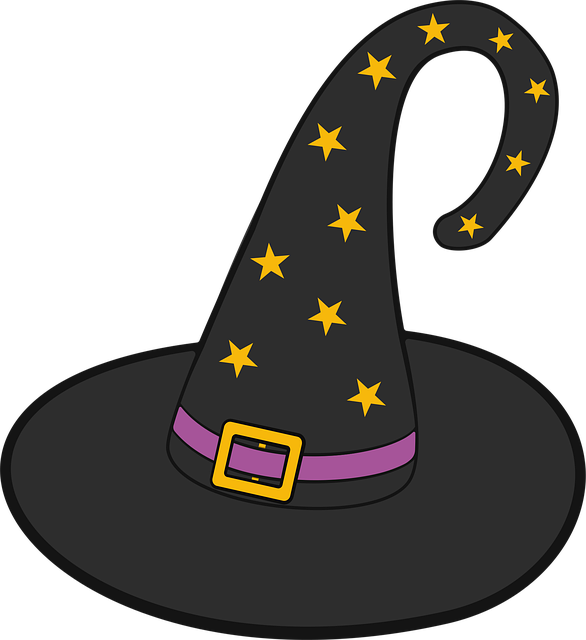

Od kiedy zebrałem wszystkie kawałki gumy do żucia z mojej podłogi, zacząłem dostrzegać, że mój kot ma tajny plan przejęcia władzy nad światem. Przynajmniej tak twierdzi jego żółta czapka, która, swoją drogą, jest w pełni zrobiona z parówek. Dziwne, prawda? Ale co ja tam wiem, przecież kocie plany nie są dla ludzi.
W każdym razie, wczoraj przez przypadek odkryłem, że wszystkie drzewa w moim ogrodzie to tak naprawdę kawałki pizzy, które zostały porzucone przez obcą cywilizację. To tłumaczy, dlaczego tak ciężko było mi znaleźć jakikolwiek cień. A może to tylko moja wyobraźnia, ale przecież kto nie miałby ochoty zjeść kawałka drzewa?
Podczas kiedy zaparzałem kawę, zauważyłem, że moje buty zaczęły tańczyć walca, a kubek zaczęli śpiewać w chórze z moim pralką. Nikt tego nie zauważył, ale to był chyba najpiękniejszy moment w moim życiu. Chociaż nie wiem, dlaczego pralka zawsze ma takie ambitne plany na sobotnie wieczory.
A tak swoją drogą, zapytałem moją lodówkę, jak zdobyć mistrzostwo świata w skokach narciarskich. Odpowiedziała, że muszę nauczyć się latać na grzbiecie wiewiórki. Brzmi sensownie, prawda? Kto by nie chciał spróbować?
Podsumowując, życie jest jak pudełko truskawkowych chipsów – nigdy nie wiesz, kiedy znajdziesz w nim tajemniczego dinozaura, który ma na imię Marcin i zbiera muszle. Ale jeśli znajdziesz, to z pewnością stanie się twoim najlepszym przyjacielem, nawet jeśli na co dzień jest to w zasadzie martwy parasol.
 
